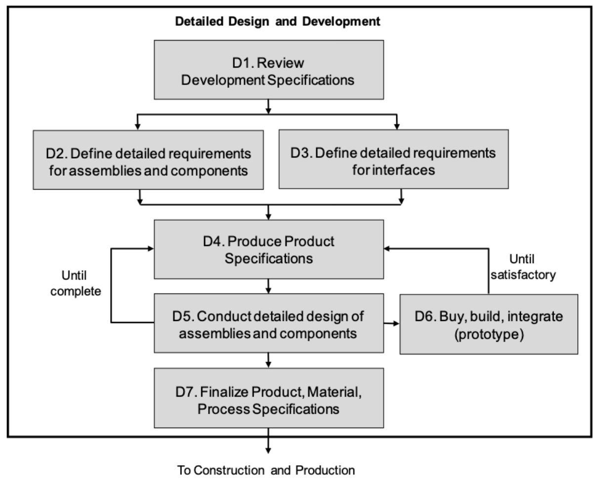
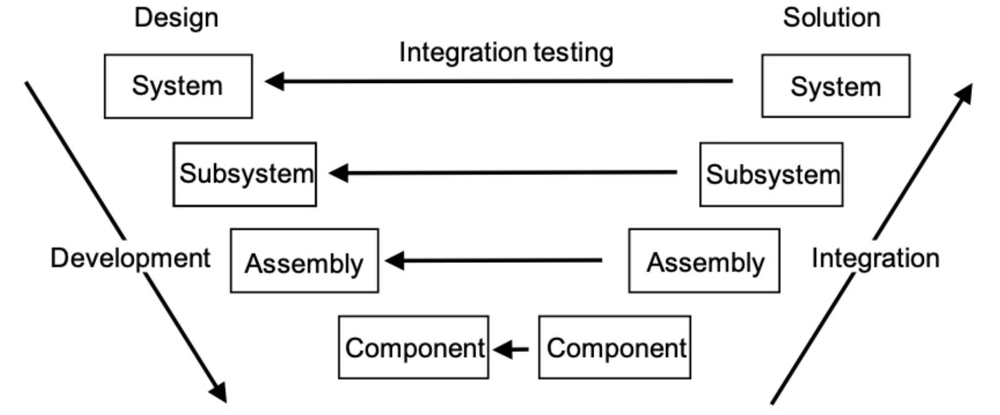
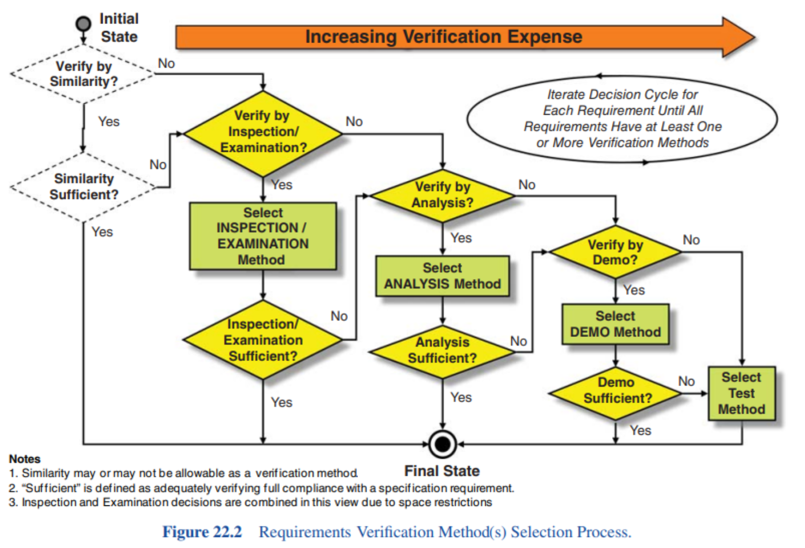

- The Detailed Design and Development activity makes use of the FBL (Functional Baseline — the result of Conceptual Design, the anchor for all downstream design: it expands brief business needs into a system-level logical design) and ABL(Allocated Baseline — the result of Preliminary Design, in which requirements are ‘allocated’ to specific physical system elements that combine to form the system).
- It takes these definitions of the overall systems (FBL) and of the subsystems and CIs (ABL) and finalizes the design of specific components that make up the CIs (and subsystems). The realization and documentation of individual components used to support production is referred to as the Product Baseline (PBL).
The major technical activities include
- describing the lower-level assemblies and components making up the CIs
- defining the characteristics of the above items through specifications and design data
- finalizing the design of all interfaces necessary to support system integration
- either procuring the above items off-the-shelf, or designing them if they are unique to the S.U.D.
- developing prototypes or engineering models of the CIs (or even the final system) by integrating the above items
- redesigning and retesting
- conducting the Critical Design Review (CDR) to confirm that the design is ready for construction and production.
Detailed Design Requirements
The CI design (hardware and software) is likely to consist of a mixture of the three broad options which are iterated in Preliminary Design — OTS, modified OTS, and developmental items.
The PBL forms the basis of the next stage in the life cycle, which is Construction and/or Production. The detailed design phase involves several activities to prove itself:
- prototyping
- simulation
- modelling
- integration
They assist in identifying problems with the design, prior to releasing it for production. We repeat until maturity.
Detailed Hardware Design

The detailed design requirements for each hardware subsystem will be documented in the respective draft Product Specification, which will include the breakdown of the CI into its lower-level elements.
D5 and D6 are closely related. In D5 we want to use as many computer-aided software (CAD, CAE) to develop the product and in D6 we actually need to validate the concepts and designs.
Integrating System Elements

Examples of integration issues
- The (sub)system does not build/cannot be made/does not fit.
- The (sub)system does not function.
- Interface errors.
- The (sub)system is too slow.
- The (sub)system does not meet main performance parameters.
- Reliability is not met.
Critical Design Review (CDR)
CDR is the final design review resulting in the official acceptance of the design and the result is the establishment of the PBL, which is the effective freezing of all design activity. All TPMs should be either exceeding or meeting the necessary levels by CDR.
The aims of the CDR include:
- Evaluate the detailed design
- Determine readiness for production
- Determine maturity of software
- Determine design compatibility
- Establish the Product Baseline (PBL)
Verification vs Validation
Verification: The evaluation of whether a product, service, or system complies with a regulation, requirement, specification, or imposed condition. It is often an internal process. Did we build the product right?
Validation: The assurance that a product, service, or system meets the needs of the customer and other identified stakeholders. It often involves acceptance and suitability with external customers. Did we build the right product?
Verification methods
- Inspection: visible provision implemented, e.g. transport handle
- Demonstration: qualitative dynamic behaviour, e.g. hatch opens
- Test: quantitative parameter proven in test procedure, e.g. speed
- Analysis: quantitative parameter that will not be tested, e.g. maximum shock level
Cost of verification

Requirements for verification
- Measurable?
- Internal measuring sensors?
- Measuring equipment + calibration
- Enabling systems
- Mock-ups
- Material
- Patients
Qualification
Design Qualification: Checked once to verify the design
Quality Conformance: verified for every product
Acceptance
FAT — Factory Acceptance Test: when leaving the (production) factory
SAT — Site Acceptance Test: when installed at the customer
TAS / TAR
TAS — Test & Analysis Specification
TAR — Test & Analysis Report
MTP vs TAS
Master Test Plan
- Defines overall test approach
- Covers all development stages
- Describes the right leg of V
- component tests
- integration tests
- verification tests
- validation tests
- High-level description of test process
Test & Analysis Specification
- Specific test plan
- Covers “logical set of requirements”
- Describes:
- related requirements (traceability)
- test method
- deliverables (TAR)
- conditions, setup, equipment
- safety precautions
- Detailed description of test(s)